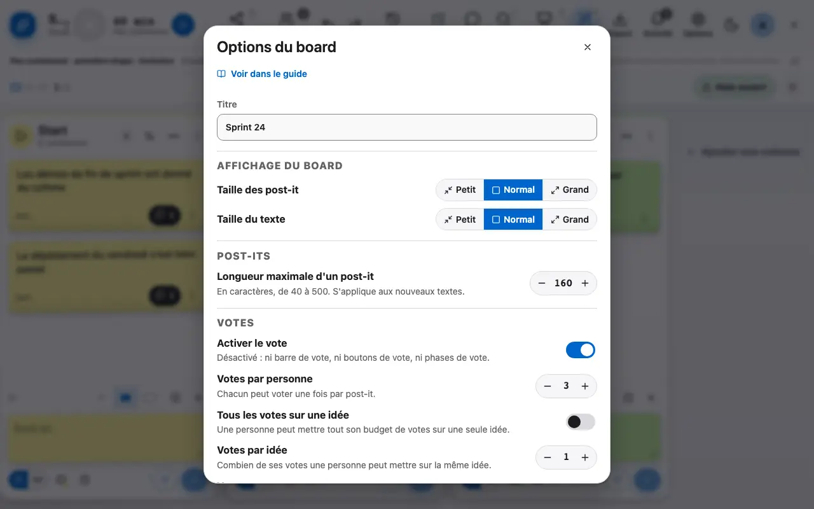
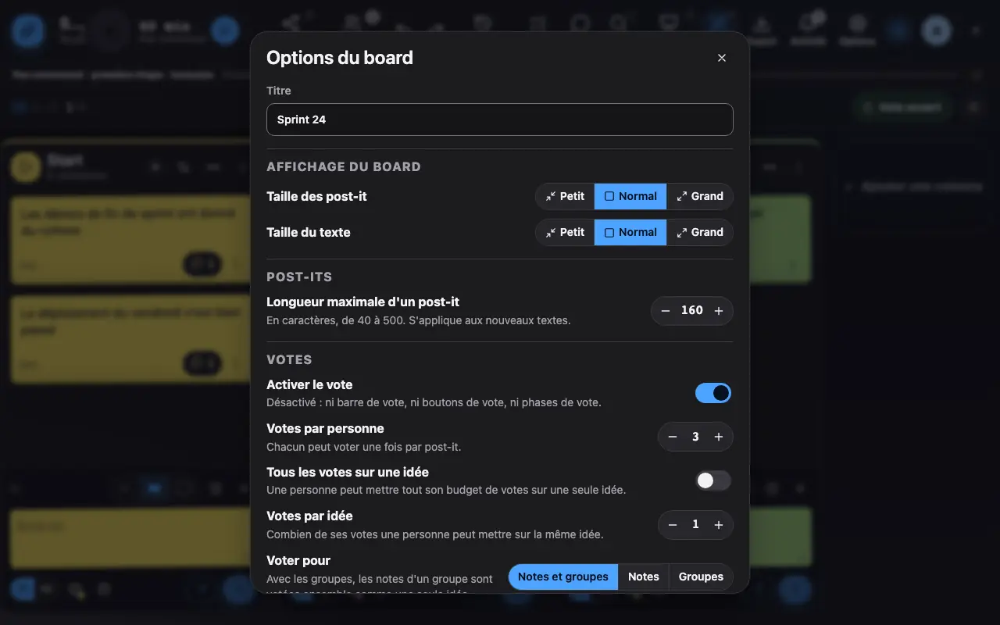

Les options du board
Votes, verrouillage, rôles: tout se règle dans les options.
1 Les options règlent les votes, le verrouillage et qui peut animer.
Les options règlent le nombre de votes par personne, le verrouillage du board (plus d'écriture), la visibilité des votes et qui peut animer. Les changements sont annoncés à tous les participants.

